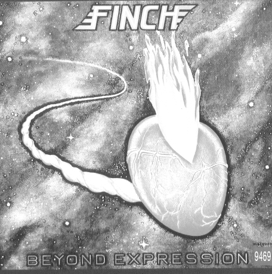
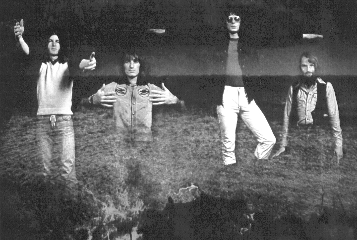

5th YBD Special Show of ProRock
* 일시 : 1995년 6월 10일 토요일 오후 2시
* 장소 : PAUSE (홍대 앞 Mydos 옆)
참석자 : 이훈구, 김성우, 김영호, 이강영, 최창규, 김이영,
신인철, 전승훈, 지영아, 구윤성, 김재열, 김지인,
전진석, 김훈, 윤성욱, 김남웅 등등. *:)
제 1부. Gentle Giant Special ( 김성우, libero )
"Gentle Giant was one of
the great progressive rock bands of the 1970's."
젠틀 자이언트는 "Simon Dupre & the Big Sound"라는 그룹에서
활동하던 유태계인 Shulman 삼형제와 여기에 Kerry Minnear,
Gary Green, Martin Smith가 가세하여 1970년도에 동명 타이틀
앨범(Vertigo 레이블 발매)으로 데뷰하였습니다. 이들은 거의
모든 멤버가 여러 악기를 다루며, 스타일에 있어서는 치밀한
곡구성, 변화가 심한 리듬, 다양한 보컬 하모니를 들려줍니다.
4집 "Octopus"부터 드러머가 John Weathers로 바뀌며, 80년도
그들의 통산 12집(공식 라이브 앨범 1장을 포함해서) "Civilian"
을 끝으로 해산하게 됩니다. 해산 후 그룹 멤버 중 John만이
웨일즈 그 룹 _Man_에서 현재까지 드러머로 활동하고 있으며,
거의가 학교선생, 프로듀서 등으로 전업하였습니다. 그럼
영국 프로그레시브 록계에 한 획을 그은
(5대 수퍼그룹[Pink Floyd, King Crimson, Yes, Genesis, ?]
에는 못 끼지만 10대에는 끼지 않을까요?..:-) )
이들의 음악을 들어보기로 하죠..
Discography
1. Gentle Giant (1970)
2. Acquiring The Taste (1971)
3. Three Friends (1972)
4. Octopus (1973)
5. In A Glass House (1973)
6. The Power And The Glory (1974)
7. Free Hand (1975)
8. Interview (1976)
9. (Official Live) Playing The Fool (1977)
10. The Missing Piece (1977)
11. Giant For A Day (1978)
12. Civilian (1980)
멤버들과 그들의 주요 악기들
* Derek Shulman - lead vocals, saxophone
* Ray Shulman - bass guitar, violin
* Kerry Minnear - keyboards, cello, lead vocals
* Gary Green - guitars, vocals
* Phil Shulman - wind instruments, brass instruments,
lead vocals
(on "Gentle Giant", "Acquiring The Taste",
"Three Friends" and"Octopus")
* Martin Smith - drums, percussion
(on "Gentle Giant" and "Acquiring The Taste")
* Malcolm Mortimore - drums, percussion (on "Three Friends")
* John "Pugwish" Weathers - drums, percussion
(on all remaining Gentle Giant albums)
Most pieces were composed by Derek, Ray, Kerry,
and (when he was in the band) Phil.
Playlist
1. Pantagruel's Nativity (6:50) - "Acquiring The Taste" 1971
2. Wreck (4:36) - "Acquiring The Taste" 1971
3. Schooldays (7:33) - "Three Friends" 1972
4. The Advent Of Panurge (4:40) - "Octopus" 1973
5. Raconteur Troubadour (3:59) - "Octopus" 1973
INTERMISSION
6. Playing The Game (6:46) - "The Power And The Glory" 1974
7. On Reflection (5:41) - "Free Hand" 1975
8. The Runaway (3:43) - "Playing The Fool" 1977
originally cutted by the "In A Glass House"
9. For Nobody (4:00) - "The Missing Piece" 1977
10. Nothing At All (9:08) - "Gentle Giant" 1970
11. 기타 후보곡들
Think Of Me With Kindness (3:33) - "Octopus" 1973
Knots (4:09) - "Octopus" 1973
Experience (7:50) - "In A Glass House" 1973
Proclamations (6:48) - "The Power And The Glory" 1974
Veledictory (3:21) - "The Power And The Glory" 1974
Just The Same (5:34) - "Free Hand" 1975
His Last Voyage (6:27) - "Free Hand" 1975
Talybont (2:43) - "Free Hand" 1975
Empty City (4:24) - "Interview" 1976
I Lost My Head (6:58) - "Interview" 1976
All Through The Night (4:20) - "Civilian" 1980
참고자료 : Gentle Giant Homepage
(http://zoo.cs.umass.edu/~barrett/gentlegiant.html)
제 2부. 자유 주제
1. German Folk(Pilz label) Special ( 김영호, 길산, vertigo )
H lderlin, Emtidi, Broselmachine, etc..
2. Finch Special ( 김남웅, Neo-zao )
Finch & Others.. by Neo-Zao, 김 남 웅
Finch는 기록상 '75년에 데뷰하여 '77년 까지 3년동안 3장의 앨범을 발표한 Dutch Progressive Rock 밴드이다. Finch에 대한 정보는 비교적 드문 편이라 하겠는데 기존의 것 조차도 신빙성을 보장할 수 없다. 대표적으로 오인되고 있는 정보는 대략 두 가지 정도인데, 첫째로 일설에는 '74년에 _Finch_라는 앨범이 발표되었다는 소문이 있지만 이는 사실무근 혹은 동명밴드에 의한 오해정도라는 설이 유력시되고 있다고 한다.
둘째로, Finch의 전신이라 일컬어지는 Q65라는 밴드는 실제로는 '66~'92년까지 존재했던 것으로 판명되었다. 그런데 Q65에는 분명히 Finch의 오리지널 멤버 3명이 포함되어 있는 것으로 보아 Finch는 Q65의 휴지기였던 '75~'79년에 분파되었던 밴드일 확률이
높다고 하겠다.
Finch의 주요멤버는 기타의 Joop Van Nimwegen과 베이스의 Peter Vink라고 말할 수 있는데 이들은 마지막 앨범까지 남아있게 된다. Finch의 모든 작곡은 기타의 J. V. Nimwegen에 의해서 이루어 졌는데 이 사실을 반영하듯이 거의 대부분의 곡은 guitar oriented rock이며 대곡 지향이다. Finch의 곡은 쉽게 기억할 수가 없는데 이 것은 이른바 싱글취향이 전혀 아닌 주 멜로디하에 숨가쁘게 전개되는 변주와 앙상블, 그리고 재현등으로 이어지는 작법 때문이다. 따라서 Finch의 곡은 Rock이지만 고전파 클래식의 작법을 따르고 있는 Symphonic Rock이라 하겠다. (물론 순수성에의 의심은 피할 수 없다.)
이는 Finch의 음악을 찾게 되는 이유인 동시에 (들을 때마다 신선하다.) 쉽게 다가오지 않을 수 있는 이유이기도 하다. 기타의 J. V. Nimwegen은 동시대의 기타리스트로 오버드라이브된 톤으로는 Steve Howe와 같은 경질의 음과 클리어 톤에서는 Andy Latimer의 멜로디 센스를 동시에 가지고 있다. 어쿠스틱 기타는 거의 리듬기타로만 사용하고 있고, 락타리스트로는 드물게 옥타브주법을 사용한다. 그의 기타는 비록 완벽하다고는 말할 수 없는 얼터닛 피킹이나 비브라토등의 약점에도 불구하고 최고의 평가를 받아 마땅한데 그 이유는 절묘한 멜로디 전개 능력과 불같은 드라이브감 때문이다.
'75년의 데뷰앨범 _Glory of the Inner Force_는 개인적으로 가장 훌륭한 앨범이라 생각하는데 J. V. Nimwegen에 의해 주도되는 연주의 경합장을 볼 수가 있다. Finch의 연주는 매우 정돈된 느낌을 주는데 이는 멤버들의 연주가 서로를 잠식하는 것이 아
니라 시분할적인 인터플레이 위주의 연주를 하기 때문이다.
'76년의 두번째 앨범 _Beyond Expression_은 데뷰앨범의 강도를 조금 낮추고 Camel의 서정적인 초기 분위기를 곡의 중간중간에 대대적으로 삽입한 앨범이다. '77년의 _Ga
lleons of Passion_은 세장의 앨범중 가장 accesible한 앨범으로 알려져 있는데 그 이유는 3장의 앨범중 가장 소프트한 연주를 하기 때문이다. 이 앨범에선 J. V. Nimwegen의 기타는 첫 두장에서 보여준 앰프게인을 높이 사용한 경질의 소리가 아니다. 따라서 동시대의 밴드들과 별 차이를 느낄 수 없을 뿐만 아니라 변화무쌍했던 기타의 전개는 들을 수 없다. Peter Vink의 베이스도 중후하고 강력한 플레이를 버렸고, 새롭게 바뀐 키보디스트와의 하모니 위주의 플레이를 들려주기 때문에 첫 두장의 출중
한 올건연주도 들을 수 없다. 이 앨범은 좀 심하게 말하면 Dutch Rock을 대표하는 가장 평범한 앨범이라고 말할 수 있다.

- 제 2기 FINCH -
SET LIST
1. Register Magister (9:22)
2. Paradoxial Moods (10:43)
- from _Glory of the Inner Force_
- Intermission -
3. A Passion Condensed (20:05)
- from _Beyond Expression_
4. With Love As the Motive
(approx. 10:00)
- from _Galleons of Passion_ - 제 1기 FINCH -
3. Musical Special ( 김이영, ardor )
4. Old Rock Special ( 이강영, Lennon )
1) Hang on to a Dream - The Nice
2) Tragedy in F minor - Pussy
3) Trigunini - Midnight Oil
4) Viva l'Italia - Francesco de Gregori
5. Fatman's Special ( 전진석, Fatman )